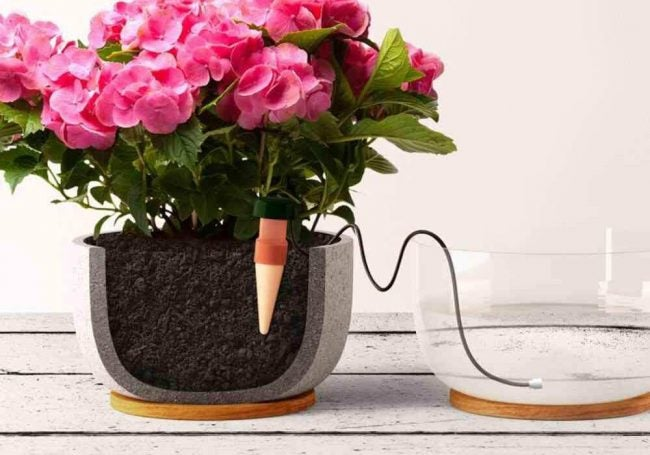

<br>
#### Week 1: Final Project Proposal
<h5> Inspiration </h5>
Here is my idea for a final project: a plant waterer!
<h5> Background/Story </h5>
Every winter break, I always have to find a plant sitter, or just leave my plant to dry out for a month when I'm away. But what if I could make something that could periodically water my plants remotely?
<h5> Proposed Solution </h5>
It would have multiple (at least 2, for the 2 plants I currently have in my room) movable spouts connected to a water tank, and you could program each spout to water a particular amount for the plant it leads to. Each spout can be programmed to water on a schedule particular to that plant.
<h5> Research </h5>
As described on [this home advice blog](https://www.bobvila.com/articles/best-automatic-plant-waterer/), many automatic plant waterers on the market are of a simple design and offer little to no customization. They also work on the order of 7-10 days or at maximum, a couple of weeks.

I know many people, myself included, have multiple plants that are on different watering schedules. For example, one of my plants can go several weeks without water, whereas the other needs weekly water.
There are also [more advanced irrigation systems](https://www.sfgate.com/shopping/article/automatic-watering-systems-indoor-plants-17307178.php) that have multiple arms (up to 15), but they don't offer their different arms to water on different schedules, requiring you to instead purchase an additional device if your plants require different conditions.
<h5> Weekly Updates </h5>
Week 3 - 9/16/22
I discussed my final project with Ibrahim and he confirmed it was possible - yay! He also gave me some cool ideas for how to design the device and make it more extendable to different circumstances, not just my own.
He suggested:
-considering light in addition to just water as a factor in plant growth (adding a photoresistor).
-making it a smart pot/planter rather than a smart attachment to a pot
-adding a screen or speaker and having the plant display a smiley face and play happy music when it's doing well or display a sad face and play sad music when it's in need of water.
-adding customizability to whether it should remind you to water on a scheule, water automatically, or sense the water level itself and remind you to water when it gets below a certain level.
He also had me consider extending how useful the device could be even after returning from winter break. Maybe it could notify me if my plant is
Week 4 - 9/27/22
I think I have a better idea of what I want to do. I want to make a platform that allows me to water my plant remotely.
I've also noticed some phototropism in my broadleaf plant over the past couple of weeks, so I also want my device to be able to turn the plant every few days so that it doesn't end up growing towards the light from the windows every single day and then I end up with a lopsided plant.
Things I'd need:
- A motorized platform to rotate the pot
- A tank of some sort (~1 gallon) from which the water will be drawn from
- A siphon
<br>
Click [here](../index.html) to return to the homepage.